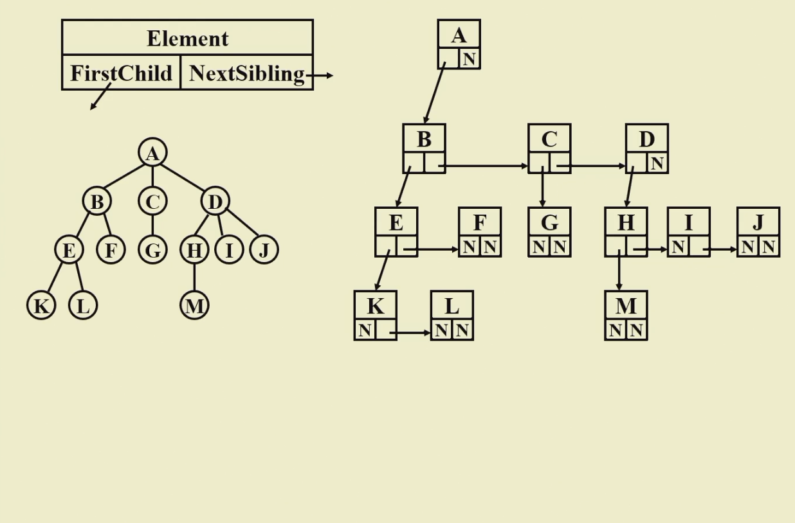
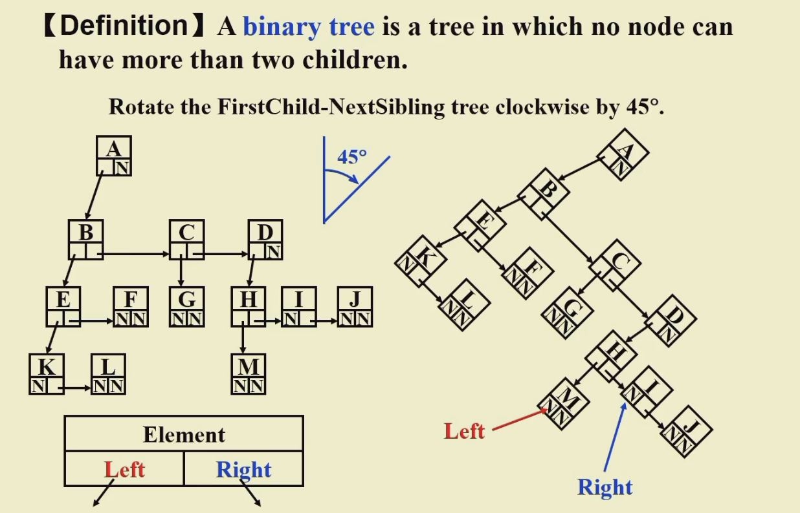

Fundamentals of Data Structure¶
错题集：
- For a sequentially stored linear list of length N, the time complexities for deleting the first element and inserting the last element are O(1) and O(N), respectively.
A：False
R：sequencial --> 顺序映射 一定是数组 不是链表
顺序映射就是地址按顺序连接，知道第一个就知道其他所有
链表则不知道，但好处是随时要到空间，但是占用内存过多时不能给出连续大片空间
- If the most commonly used operations are to visit a random position and to insert and delete the last element in a linear list, then which of the following data structures is the most efficient?
A. doubly linked list
B. singly linked circular list
C. doubly linked circular list with a dummy head node（好处是可以前进后退）
D. sequential list
A：D
R：Random access-->一定是数组
链表中每个节点的地址都储存在前一个节点中，无法达成随机访问，只能有一步知道下一步的地址
- To merge two singly linked ascending lists, both with N nodes, into one singly linked ascending list, the minimum possible number of comparisons is:
A：N
R：第一个元素比较a1次后插入，第二个比a2次……
直到a1+a2+…… = N后，其他的元素不用比较直接放在最后面即可 极端情况是每一个元素都比另外一个数组小，那么第一个元素比较N次后，其他元素全部插在后面，也同样是N次
- It is always possible to represent a tree by a one-dimensional integer array.
A: T
- If a general tree T is converted into a binary tree BT, then which of the following BT traversals gives the same sequence as that of the post-order traversal of T?
A: In order traversal. 找一个树的例子试一下
- In a binary search tree, the keys on the same level from left to right must be in sorted (non-decreasing) order.
A: T
- 判断BST decision tree 的合法性：对偶数来说一定左右平衡 奇数是自己选定走左边（或者右边），选定好了一定对每个子树来说都是左边大于右边（或者相反）不会前后矛盾
Lec 00¶
3 types of structures
sorting
hash
preparing for ads(queue stack)
further studying
测试数据的要求：
- 分支测试：对每个if-else都要进入
- 边界测试：数据范围的最值
需要在最大数据时找到最快数据和最慢数据
Lec 01 Algorithm Analysis¶
Time & space complexity : machine and compiler independent
mostly about time
Assumption:
- instructions are excuted sequential
- simple instruct
- integer size is fixed and infinite memory
usually analyzing the average and worst cases time
O: worst case(take the smallest f(N) to illustrate )
Tx <= Cfx
Ω: best case(take the largest f(N) to illustrate )
Tx >= Cfx
ø: completely same
Tx = Ofx = Ωfx
o: infinitely related to O
operation:
T1 + T2 = maxone
T1*T2 = multiple
Lec 02¶
Q:求已知数列的最大子列
- 暴力穷举 O(N^3)
- 优化this sum求法 减少一组循环
- Divide and conquer O(nlogn)
- On-line Algorithm不走回头路
Q:binery search
use loop O(logn)
- usually used in static and ordered data
Lec 04 ADT¶
Data type = object + operation
Abstract:
representation is separated from implementation
each operation is isolated
Polynomial ADT¶
coefficient and exponent
(X) when poly is sparse but the operation is dense
typedef struct poly_node *poly_ptr;
struct poly_node
{
int Coe;
int Exp;
poly_ptr next;
};
typedef *poly_ptr a;
Multilists¶

Lec 05 Linear List¶
Stack ADT¶
帮助系统临时存放或者调整顺序所用的工具
Last in First out(LIFO)后进先出
只能对栈顶进行操作
Objects：A finite ordered list
Operations:
Judge Empty:
Stack:
Dispose:
MakeEmpty:
Push: give a new element in
Top: look at the top element
Pop: take out the top element and delete it
Implementation¶
- Linked List(with a header): from top to down
用链表实现时 链表的第一个元素位于stack的top
head可以理解为stack外的一块内存，s是head的名字，就是这个head块 起到定位作用（地址）
s->next = first element in stack
//push:
Tem->next = s->next
s->next = Tem
//top
return s->next->element
//pop:
first = s->next//确定第一块的位置
s->next = s->next->next
free(first)
But malloc and free are expensive
Solution: use a recycle bin
- Array: much better when knowing size
struct Stack
{
int Capacity;//size
int Topofstack;//the top pointer's location
//此处的pointer 不仅仅指c的pointer，是一个储存地址的符号，也可以是下标等等
//只要存放的是 位置 都可以是指针
ElementType *Array;//category of element
};
添加元素时top++，删除元素时top--，指针向下移动，但是只是数值减小，并不会free上方的元素，只是当作他们不存在
eg: Balancing Symbols check if () and [] and {} are balanced
从左到右一直看左括号，遇见的第一个右括号一定是和左括号匹配的，此时删除这一对括号，接着继续重复的操作，读完整个输入，如果栈内为空，则balance
Algorithm
{
Stack S;
InitializeStack(S);
while (more input)
{
read a character c;
if (c is an opening symbol)
push(c, S);
else if (c is a closing symbol)
if (StackIsEmpty(S))
return (unbalanced);
else
{
t = top(S);
pop(S);
if (t does not match the corresponding opening symbol of c)
return (unbalanced);
}
}
if (StackIsEmpty(S))
return (balanced);
else
return (unbalanced);
}
eg：Postfix Expression a+b-cd = ab+cd- a(b+c)/d = abc+d/
Method:
- when meeting oprand, push into stack
- when meeting operator, pop two oprand and calculate, then push the result into stack
solution to () never pop a ( until you meet a )
eg: Function calls: system stack
stack pointer: to the top of the stack
function pointer: to the bottom of the current function frame
infix to postfix
输入一段中缀表达式，转换到后缀表达式
遇见operands直接输出，遇见operators先放进栈内，继续输出数字，遇见下一个表达式时，比较两个表达式的优先级：
-
栈内的大于等于栈外的，pop栈内的，与栈内下一个进行比较
-
栈外的大于栈内的，继续push
-
遇见括号：
栈外的括号优先级最高，直接进入，遇见有括号时弹出括号往上的所有operators，改变括号优先级方法：
- 用条件判断
- 设置两套括号，栈内一套，栈外一套
Queue ADT¶
保持顺序使用
First in First out(FIFO)
Objects: A finite ordered list
Operations: ...
Enqueue: add a new element to the end of the queue
Front: take out the first element
Dequeue: take out the first element
Implementation¶
- Array
struct QueueRecord
{
int Capacity;// max size
int Front;// the first element
int Rear;// the last element
int Size;// current size
ElementType *Array;
};
- Circular Array
Note: To defferentiate the empty and full, we need to waste one space, which means the max size is n-1
Another method is to use a flag to indicate the empty and full
Lec 06 Tree¶
A collection of nodes.
Consists:
- a distinguished node r, called root
- and zero or more nonempty (sub)tree
- subtrees must not connect together
- there are N -1 edge with N nodes
degree:
the numbers of subtrees of a node
degree of a tree is max of all degrees
children:
directly connected ones(not all descents)
siblings:
children of the same parent
leaf:
degree 0 node
path:
a unique sequence of nodes
length:
the edges number
depth:
length of the unique path from the root
Implementation¶
- first child next sibling

- binary tree

eg
- expression tree:
先进行中缀表达式转后缀表达式：
利用堆栈递归实现：
对后缀表达式遇见operand push，遇见operator pop出栈内的两个元素形成一个树，再将这个树的root push进堆栈作为后续形成树的元素
-->栈内的元素就是tree
- tree traversal:
采用递归的方式，可以preorder 也可以postorder
preorder：先操作再递归
postorder：先递归再操作
除此之外：层序遍历 level order：
用queue实现
将每一层的node全部输出后进入下一层
- 当前层元素全部enqueue
- queue不为空时：
- dequeue一个元素
- enqueue这个元素的node
void levelorder(tree){
enqueue(tree)
while(queue is not empty){
visit(T = dequeue())
for(each child C of T)
enqueue(C)
}
}
inorder(only in binary tree)
先左后右递归
for binary inorder:
void inorder(tree){
if Node == NULL
return;
inorder(tree->left);
printf tree->data;
inorder(tree->right);
}
- file structure
- 按照层级tab
采用preorder，void fun(tree, depth)
传入两个参数，一个是当前树，一个是深度，每层递归时，深度加一，根据深度tab
Lec 07 BST¶
Properties of BT¶
层数为n的BT 最多有2^n-1个node
degree 为 0 （叶子结点）个数 = degree 为 2节点个数 + 1
proof：
n = n0 + n1 + n2
side = 2*n2 + n1
side = n - 1
可以消去n1
BST binary search tree¶
def：
- 左子树数值一定小于根结点，右子树一定大于根结点（当前树的）
- 左右子树都是BST！！！！
适用于：动态查找
通过中序遍历由小到大输出
Implementation¶
- find
递归实现：
basecase：T = NULL
左边 else 右边 else 本身就是根结点数值
与树的深度成正比
- find min max
递归向左右边走
-
Insert
-
check if k in
-
看左右还有吗 没有就插
-
delete
-
delete a leaf: make its parent point to NULL
- n1: replace it by its single child, and free it
- n2:
尽量保证原来树的结构：用替换的方法
选左边最大的元素或者右边最小的元素放到删除位置，再将用来替换的元素
tree delete(element x, BST t){
position tmpcell
if(t == NULL)
return not found;
else if(x < t->element)
t->right = delete(x, t->right);
else if(x > t->element)
t->left = delete(x, t->left)//search for the position
else{
if(t->left && t->left){//if n2
tmpcell = findmin(t->right);//use find a min on right way
t->element = tmpcell->element;
t->right = delete(t->element, t->right);
}
else{// if n0 or n1
tmpcell = t;
if(t->left == NULL)
t = t->right;
else if(t->right == NULL)
t = t->left;
free(tmpcell);
}
}
return t;//return t to its parent
}
lazy deletion: don't free a node but add a flag to it
Lec 08 Priority Queue(Heaps)¶
delete the element with the highest / lowest priority
Binary Heap¶
- Structure Property
完全二叉树：
保证树高h=logn
是部分的完美二叉树-->完全三角形且节点的标号是完全按照顺序的
适合用数组存放（完全利用空间）
用数组进行存储：

不会有空间浪费（无偏斜树）
从index = 1 开始存储
index = 0 的位置作为哨兵，设置成离开数值范围的值
- 运动方式：以数组角标1开始
-->下标x2 向左走
-->下标x2 + 1向右走
从下往上走：➗2 取整

- Order Property
To def min heap and max heap:
直属的大小关系分别为递增/递减，比较兄弟不一定，沿路径单调，因此搜索任意值一定要全部扫描，所以HEAP不适用于搜索（BST更好）
但是root一定是最值，所以适合对最值操作
### Operation
- Insertion: 上滤
假设放在最末尾—>判断(与parent大小)是否成立
void Insertion(data x, Queue H){
int i;
if(isFull) Error;
for(i = ++H->size; H->element[i/2] > x; i = i/2){// 总会有哨兵使之停止 //与parent比较大小
H->element[i] = H->element[i/2];//上滤找位置 非交换
^
|
//在这里第一次操作相当于加入一个新单元 因为i = size是边界，++size是新的空间
}
H->element[i] = x;
}
O(logn)
- Delete min：下滤
包括拿出最小值和重构Heap
重构：取出最后一位的数据，下滤（由root位）找到可以放他的地方
int Deletemin(Heap H){
int i, child;
1.判空；
minelement = H->element[1];
lastelement = H->element[H->size--];//暂时取出最后一位元素
for(i = 1; i*2 <= H->size; i = child){//下滤过程
child = i*2;
if(child != H->size && [child+1] < [child])
child ++;//暂存的最后一个元素要满足property：需要小于两个孩子中最小的那个
if(lastelement > [child])
[i] = [child];//下滤
else break;//找到位置，break
}
[i] = lastelement;
return minelement;
}
- Decrease/Increase Key:
调整优先级，将任务上浮或下沉，Key是某个任务的优先级顺序，改变Key的大小
需要重新调整堆使其保持特性
void DecreaseKey(int i, int value, Heap *h){
int j;
if(i > h->size){
printf("Index is not in the heap\n");
return;
}
if(h->element[i] < value){
printf("New value is greater than current value\n");
return;
}
for(j = i; h->element[j/2] > value; j/=2){
h->element[j] = h->element[j/2];
}
h->element[j] = value;
}
- Delete：
先Decrease 再 Deletemin
- build Heap
void BuildHeap(Array H[]){
int i = h->size/2;
for(; i > 0; i--){
int j = i;
int tmp = h->element[j];
int k = j*2;
while(k <= h->size){
if(k < h->size && h->element[k] > h->element[k+1]){
k++;
}
if(tmp > h->element[k]){
h->element[j] = h->element[k];
j = k;
k = j*2;
}else{
break;
}
}
h->element[j] = tmp;
}
Lec 09 Disjoint set¶
等价关系 equivalent relation
symmetric reflexive transitive
等价类： 具有相同等价关系的一类对象
- eg：对等价类进行分类

void find(){//并查集算法
//1.read in relaitions
Initial n disjoint set;
while(read in a~b){
if(!(Find(a) == Find(b))){//如果两者不属于同一家族，
Union two set//合并这两个家族
}
}
//2.dicide if a~b
while(read in a and b)
if(Find(a) == Find(b)) output(true);
else output(false)
}
Implementation¶
用数组，但实际上是指针
Union
S[element] = element's parent
S[root] = 0 and

Find
但是会有可能成为线性链表，树高非常高
Smart Union
- union by size
存放size：S[root] = -size
此时的size不会超过log2(N)+1
Path compression
type find(s, x){
if(S[x] <= 0) return x;
else return S[x] = find(S[x], S);//递归的将经过节点连到father 从而达到path compress
}
非尾递归，会在每次递归的时侯将经过的节点连到father上
Lec10 Graph Algorithm¶
一个挨着一个->线性表
一个管好多个->树
树是图的特殊情况
图是多对多
Def¶
G(V, E) 顶点 边
可以只有顶点没有边，至少有一个顶点
- 无向图 undirected
(v1, v2)
- 有向图 directed
< v1, v2 >
complete graph : a graph has max edges
边数：有向n*(n-1)
无向n*(n-1)/2
adjacent:相邻的
对有向图：A->B: A is adjacent to B, B is adjacent from A
subgraph: 顶点的子集&&边的子集
path:(v1, v2,......)
length of path: 边的数量
simple path：每个v不相等
circle: simple path with vi = vj 头尾相等的simple path
connected graph: every pair of v is connected
Component: 一个图里的最大连通子图(不能再加入一个v/e， 否则就不相连)
tree: 无环的根结点为一的图
DAG: 有向无环图
Strongly connected directed graph: 任意一对顶点，往返都有路
Weakly connected: 不满足强连通，但是将其转变为无向图后连通的图
Degree: 入度+出度Degree: number of edges incident to v. 2E=∑degree
Representation¶
- 二维数组
adj_set[ i ] [ j ] = 1 if i j connected else = 0
- 链表
只存出度
n个顶点，要开一个长度为n的一维数组，对应位置是每个顶点
数组元素是链表的头指针，即相当于开n个链表的头指针，存储时：
A->B：找A链表，将B的头节点插入到A的链表中

- Multilist
存边，结构体里包含mark，用于标记这条路是非被访问过，两个点指向所连接的节点
- 拓扑排序

AOV Network activity on verticle
一定是非自反的-> DAG
拓扑序：
理解：按照所有的先修课都不冲突的情况能排出一个课表
void Toposort(Graph G){
int counter;
Vertex v, w;
for(counter = 0; counter < Numvertex; counter ++){
v = findNewVertexofDegreeZero();//找到一个入度为0的边
if(v == NotAVertex){
Error("Graph is a cycle"); break;
}
TopNum[v] = counter;//如果有可以学的课，将它学掉
for(each w adjacent from v)
indegree[w]--;//并且将以它为预修课的课中删掉（减小他的下一门课的入度）
}
}//O(v^2)
改进：采用一个结构存储入度为0的节点

Lec11 Shortest Path Algorithm¶
两点之间的权重和最小->weighted path length 最小值
- single-source 单源最短路
固定一个顶点到其他点的（加权）距离最小
- 无权：等价与每条路的权重是1
Breadth-first Search: 固定一个点 找与他距离为1的点
过程中标记避免走重复路经
存储路径：用父指针记录前一个位置 存前置顶点的编号
void Unweighted(Table T){//T is initialized with source vertex S
queue q;
vertex v, w;
q = CreateQueue(NumVer); MakeEmpty(q);
Enqueue(S, q);//初始化时将起点进队列
while(!IsEmpty(q)){
v = Dequeue(q);//将当前节点推出队列
T[v].Known = true;//tag the vertex which has been visited，这一步可以不要
for(each w adjacent from v){
if(T[w].Dist == infinity){//如果这个位置没有被访问
T[w].Dist = T[v].Dist + 1;//记录下一个节点的距离
T[w].Path = v;//记录下一个节点的路径
Enqueue(w, q);//将邻近的节点作为下一个当前位置
}
}
}
DisposeQueue(q);
}
O(V+E): 每次进入一个V 走遍V
- 有权：
Dajkstra
void Dijkstra(Table T){
for(;;){
v = smallest unknown distance vertex;
T[v].known = true;
for(each w adjacent to v){
if(T[w].known == false){
if(T[v].distance + Cvw < T[w].distance){
T[w].distance = T[v].distance + Cvw;
T[w].path = v;
}
}
}
}
}
Lec 12 Network Flow & Minimum Spanning Tree¶
Network Flow
Network 有权
Flow 有向
由source 到sink 源到汇
将每个边的大小当作管道的最大流量
The task is to find the maximum amount of flow that can pass from s to t
- undo
找到一条路上最大通量，将这条路上的每条边减去这个值，并在每条路上反向加一个这个值
时间复杂度：O(fE) f是最大流
Minimum spanning tree
一个子图包含所有顶点，包含一部分边，构成了一个树
use greedy:
- use only edges within graph
- use exactly V-1 edges
- no use edges that produce cycle
Prim : grow a tree
类似Dijkatra 因为生成树需要n个点，每一步都是子生成树
开始选择一个点，找邻边最小的作为第二个点，此时就有了一个子生成树，接下来每一步都需要选择这个子树的向外扩展边（边的一头在树上，一头不在）
Kruskal : maintain a forest
以边的角度考虑，每次找最小的边，同时保证不构成回路，这样选完n-1条边后，就会有一个最小生成树
void Kruskal(Graph g){
T = {};//set as empty
while(|T| < V-1 edges && E is not empty){
choose a least cost edges(v, w) from E;
delete it from E;
if((v, w) wont cause a cycle)
add(v, w) to T;
else
discard it;
}
}
适用于
可以用堆找到最小值
判断是否构成回路：并查集算法，每次找边的时候相当于加入一个等价关系
时间复杂度：O()
Lec 13 BFS DFS¶
图相关问题的本质是遍历
将二维结构转化成一维结构去做
遍历时：需要选定一个基准位置，在基准位置上找相连接的各个点
在这个过程中，每次只能选择一个相邻点，剩下的点需要保存
-->根据保存方法分类：
- 用队列：宽度搜索
- 用堆栈：深度搜索 但是程序实现时通常用递归而不用堆栈
DFS
- undirected
void DFS(Vertex a){
visited[a] = true;
for(each w adjacent to v){
if(!visited[w]){
DFS(w);
printf("\n");
}
}
}
计算连通分量：对一个图进行遍历后查看visited 如果没有visited，调用DFS 分量= DFS调用次数
双联通：拿掉图中一个点，剩余的图仍然是联通的
拿掉后图不连通 称这个点：关节点articulation
双联通则无关节点
双联通分量：最大子双联通图
Q1:计算双联通分量
- 深度遍历 遍历时给每个节点添加Num作为遍历的顺序
- 计算Low值：Low的理解：我能联络到的最高层（最小的num）
- 查看满足关节的条件

Q2:Euler Circuit
一笔画
结论：
- 如果所有节点的度都是偶数，那么一定有欧拉回路Euler Circuit（起止点相同）
- 如果有两个奇数度节点，可以形成欧拉路径Euler Tour（一笔画但不用起止点相同）
时间复杂度：O(E + V)
Lec 14 Sorting¶
selection
bubble
insertion
void insertion(int a[], int n){
int tmp;
for(int p = 1; p < n; p++){
tmp = a[p];
for(int j = p; j > 0 && a[j-1] > tmp; j--)
a[j] = a[j-1];//移位
a[j] = tmp;
}
}//平均O(n^2) 有序时最好O(n) 无序时O(n^2)
Inversion 逆序：大小与位置不匹配的两项
最坏的情况：C(2 n)个逆序 需要交换C(2 n)次
平均：n^2/4
Shellsort
分组使用插入
最坏n^(3/4) 平均 n^(6/7)
Heap sort
树形选择
-
首先建堆 重复去除堆顶元素 O(nlongn)
-
建最大堆，每次将堆顶放到数组最后端，然后维护这个堆
2NlogN-O(NloglogN)
快排和merge本质上是一种思想：divede and conquer and merge
但是侧重点不同：
- merge在二分数组后强调在分治之后的归并，但是归并的时候若左边已经全部小于右边，则无需merge 这就是快排的目标
- 快排强调在divide时找到基准元素pivot 使得分治的数组整个都大于或小于
Merge sort
O(nlogn)
Quick sort
slower than insertion when N <= 20
选择pivot：可以前中后三个里面取适中的
一定是适中的：随机选五个 中间的元素
hqm的qsort：
Lec 16 Hashing¶
均匀
哈希函数怎么设计
冲突怎么解决
哈希方法的评价
Hashing for searching
通过计算来找对象
- 字典问题
ADT
< name, attribute >
hash table:
n 是实际进入的哈希元素 T是可提供的不同哈希值
identifier density: n/T
loading density: n/sb sb是哈希表的面积（可以存放的数量）
Design Hash¶
数字：
- 求余法 u(x) = x%m
- 平方取中：
将数平方，取中间的两位数
- 折叠法：
- 数字分析法
字符串：先变为数字
通过位运算进行转换：
int index_hash(char *x, int tablesize){
unsigned int hashval = 0;
while(*x != '\0')
hashval = (hashval << 5) + *x++;//相当于 x 32
return hashval % tablesize;
}
Collision¶
- 链表解决：n个元素，哈希表至少长度为2n

O(1) insertion
- open addressing:
（H(x) + f(i) ）% Tablesize
i是冲突次数，f表示偏移量，典型的是f(i) = i, 称为
- 线性探测probing
平均成功查找次数：枚举法
平均不成功查找次数：根据哈希值的特点分类 对每类求平均值
- 二次探测：
f(i) = i^2避免初始聚集，但是有时候会找不到空位
在下列条件满足时，一定可以找到位置：
半满，TS = 素数
- double hashing:
将f(i)设计为新的i*H2(x)
典型：H2 = R-(x%R)
- rehash
将表扩大一倍后找最近的素数
rehash条件：
- 元素超过一半
- 超过load
- 插入失败